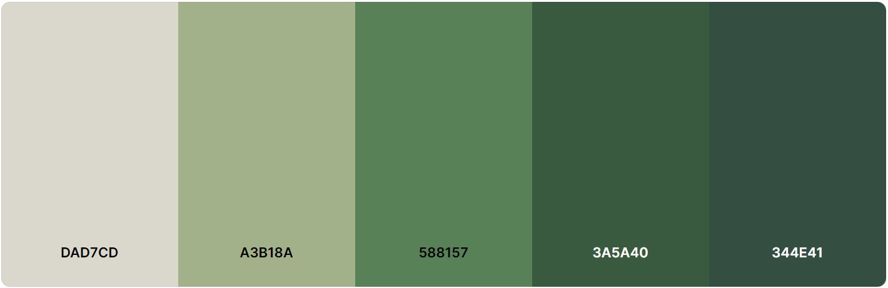

Avances
Presentación
¡Bienvenidos! Nuestro sitio web está dedicado a empoderar a jóvenes adultos de
18 a 30
años para que se conviertan en agentes de cambio en la protección del medio ambiente. Creemos que este
grupo tiene
un enorme potencial para influir positivamente en nuestro planeta a través de decisiones informadas y
acciones
sostenibles. Te invitamos a explorar nuestros contenidos, a unirte a nuestras campañas y a ser parte de
un
movimiento que busca un futuro más verde y sostenible. Tu compromiso y tus acciones pueden hacer una
gran
diferencia. ¡Gracias por ser parte del cambio!
Publico Objetivo
Nuestro sitio web de concientización sobre el medio ambiente está dirigido
principalmente
a jóvenes adultos, específicamente aquellos en el rango de edad de 18 a 30 años. Consideramos que este
grupo
demográfico posee la capacidad y la responsabilidad de generar un impacto significativo en la protección
del
planeta. Los jóvenes adultos están en una etapa de la vida donde toman decisiones cruciales sobre su
estilo de vida,
consumo y participación en actividades comunitarias. Además, este grupo tiene un alto nivel de uso de
tecnologías
digitales y de participación en redes sociales, lo que facilita la difusión y el compromiso con las
iniciativas
propuestas en nuestra plataforma. Al centrarnos en jóvenes adultos, buscamos fomentar un cambio de
hábitos y una
mayor conciencia ambiental de manera efectiva y sostenida.
Identidad Visual
Nuestra identidad visual se encuentra completamente comprometida y asemejada
con el medio ambiente, donde buscamos representar una fresca caracterización, para reflejar nuestro
objetivo de preservar la naturaleza y su correcta conservación.
Elegimos una paleta de colores de tonalidades verdes, donde queremos evocar la exuberancia de la
vegetación y la frescucars del aire puro. Nuestro logo, simple pero impactante, representa nuestro
compromiso con la sustentabilidad. Selecionamos esta tipografía para transmitir seriedad y confianza,
reflejando nuestra dedicación a a esta importante causa.
Unite a nosotros a en nuestro viaje hacia un mundo ecológico y sostenible!
